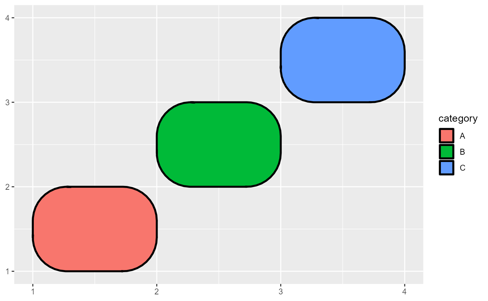

geom_rrect
geom_rrect.RdRounded rectangle
Usage
geom_rrect(
mapping = NULL,
data = NULL,
stat = "identity",
position = "identity",
r = 0.2,
...,
na.rm = FALSE,
show.legend = NA,
inherit.aes = TRUE
)Arguments
- mapping
Set of aesthetic mappings created by
aes(). If specified andinherit.aes = TRUE(the default), it is combined with the default mapping at the top level of the plot. You must supplymappingif there is no plot mapping.- data
A data.frame, or other object, will override the plot data. All objects will be fortified to produce a data frame.
- stat
Name of stat to modify data.
- position
The position adjustment to use for overlapping points on this layer.
- r
The radius of rounded corners.
- ...
additional parameter, e.g. color, linewidth, alpha.
- na.rm
If "FALSE" (default), missing values are removed with a warning. If "TRUE", missing values are silently removed, logical.
- show.legend
Whether to show legend, logical.
- inherit.aes
Whether to inherit aesthetic mappings, logical, defaults to "TRUE".
Details
draws rounded rectangle by using the locations of the four corners (xmin, xmax, ymin and ymax) like geom_rect().
Aesthetics
geom_rrect() understands the following aesthetics (required aesthetics are in bold):
Learn more about setting these aesthetics in vignette("ggplot2-specs").
Examples
library(ggplot2)
#> Warning: package 'ggplot2' was built under R version 4.3.3
df <- data.frame(
xmin = c(1, 2, 3),
xmax = c(2, 3, 4),
ymin = c(1, 2, 3),
ymax = c(2, 3, 4),
category = c("A", "B", "C")
)
p <- ggplot(df) +
geom_rrect(aes(xmin = xmin, xmax = xmax,
ymin = ymin, ymax = ymax, fill = category),
r = 0.4, linewidth = 1, colour = "black")
print(p)
